Unknown's AtlasHalloween-KarteStand 3: im SpielNicht veröffentlichen
Hollowmere ManorArbeitstitel · Villa als Horrorfilm-Set
Eine Filmcrew dreht in einer verlassenen Villa einen Slasher. Nach Drehschluss bleibt sie über Nacht im Haus. Und das Haus spukt wirklich.
Grundriss
Das Haus ist der Kern und in beiden Größen gleich. Die große Variante öffnet zusätzlich Garten, Friedhof und Familiengruft, und einige Systeme ziehen dorthin um. Klick auf einen Raum zeigt, was dort passiert.
Größe im Vergleich
Weitester Laufweg vom Spawn (Eingangshalle), gerechnet wie bei der Kartenverkleinerung: Raster 0,25 m, 0,3 m Wandabstand, 2,5 m/s. Vents und Geheimgänge zählen nicht mit.
Stilblatt
Erster Grafik-Entwurf von Fable (handgezeichneter Among-Us-Stil, 160 px pro Meter, Schrägsicht wie Museum und Park). Noch nicht im Spiel, noch nicht auf der Karte verteilt: Das hier legt nur den Look fest.
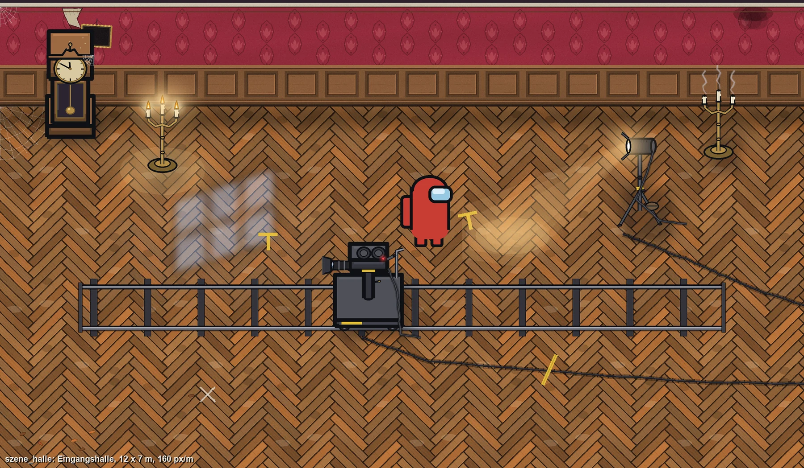
Eingangshalle, 12 × 7 m: Standuhr, Dollyschiene mit Filmkamera, Scheinwerfer, Kandelaber an und aus, Kabel und Tape-Marken.
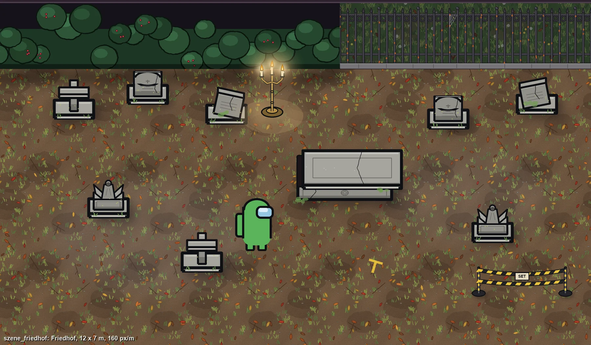
Friedhof, 12 × 7 m: Hecke und Eisenzaun als Grenze, vier Grabstein-Formen, Steinsarg, Absperrband der Crew.
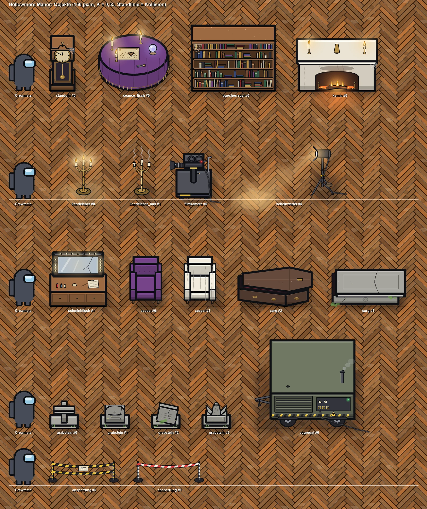
Alle Objekte neben einem Crewmate als Maßstab.
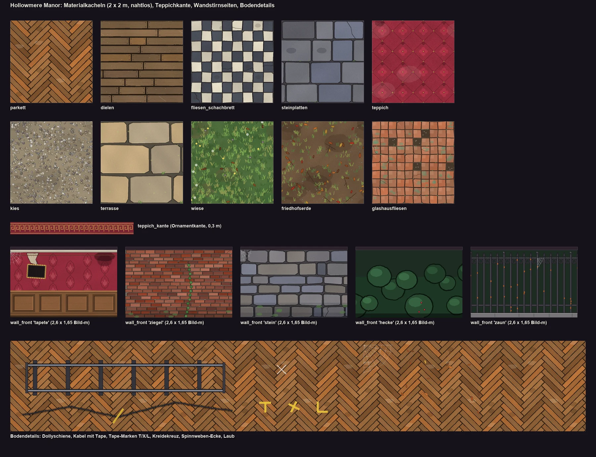
Bodenmaterialien je Raumtyp, Wandstirnseiten (Tapete, Ziegel, Stein, Hecke, Zaun) und Filmset-Bodendetails.
Meine Durchsicht
Stark: Kandelaber an und aus, Kamin mit Glut, Filmkamera auf dem Dolly, Steinsarg, Tapetenwand mit Vertäfelung. Strich und Umrisse passen zu Museum und Park.
Parkett zu unruhig: Das Fischgrät-Muster ist kontrastreich. Auf großen Flächen könnten Spielfiguren und Leichen schlechter auffallen. Vorschlag: Kontrast deutlich senken.
Zu wenig Horrorfilm: Der Look ist eher verfallene Pracht. Kunstblut-Spuren, Kreide-Umrisse, Filmplakate oder ein Requisiten-Messer fehlen noch.
Mondlicht-Fleck: Er wirkt grau statt blau. Das lässt sich bei der Kartengrafik lösen.
Im Spiel
Aufnahmen aus dem Freeplay-Autotest vom 09.10. (Atlas-Diagnose, eigene DLLs danach zurückgelegt). Beide Größen bauen ohne Fehler: 46 Konsolen, 13 Türen, 4 Kameras, 9 bzw. 13 Vents.
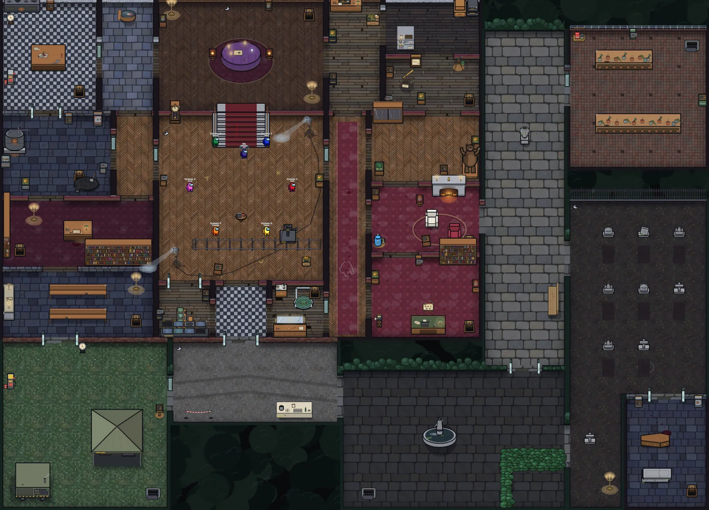
Groß (50 × 36 m): Haus, Crew-Lager, Vorplatz, Brunnenhof, Terrasse, Gewächshaus, Friedhof und Familiengruft. Gesamtaufnahme aus dem Spiel.
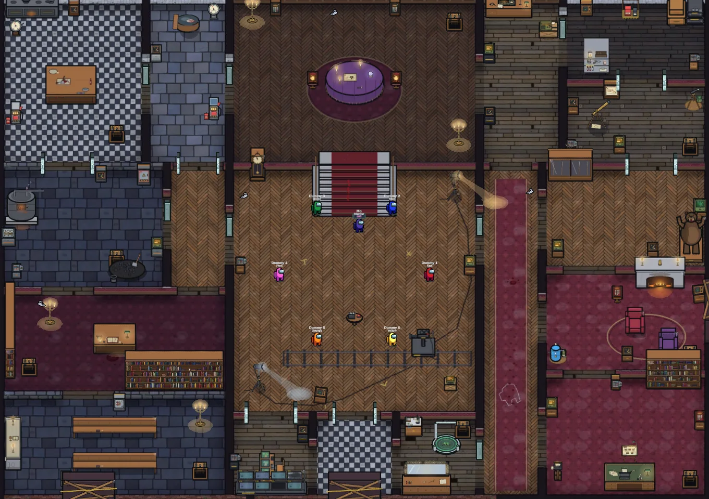
Klein (34 × 24 m): nur das Haus. Die drei Außentüren sind mit Brettern verrammelt.
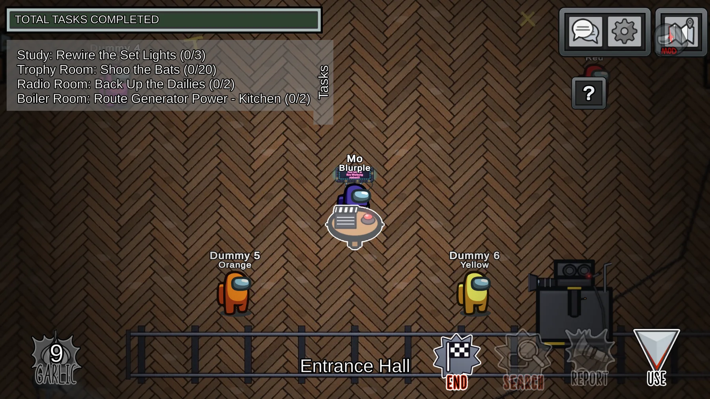
Eingangshalle: Spawn, Regieklappe als Notfallknopf, Dollyschiene mit Filmkamera. Raum- und Aufgabennamen im Villa-Stil.
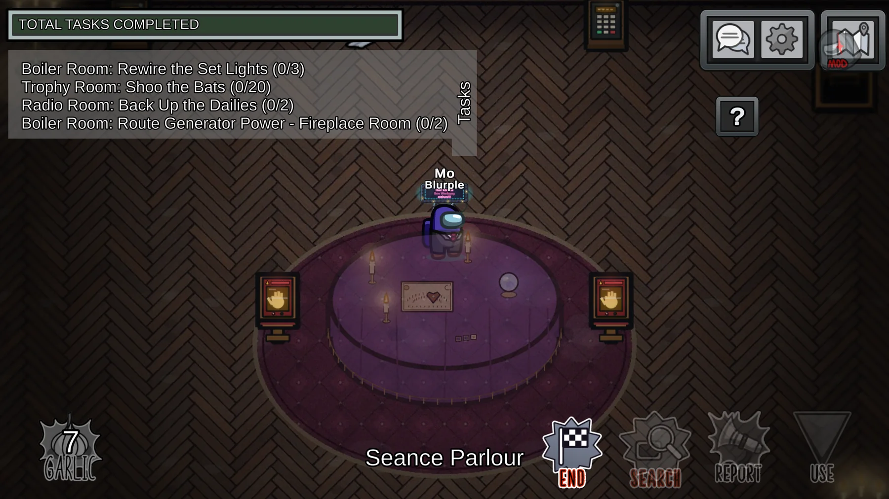
Séance-Salon: die zwei Handabdruck-Platten für die Reaktor-Sabotage „The Ritual Escalates“.
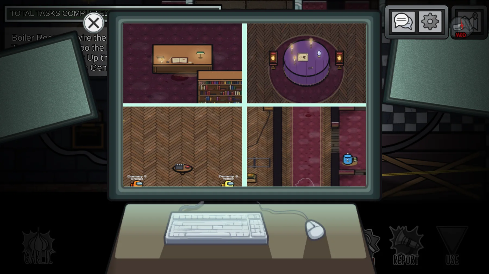
Kameras der Regie: Bibliothek, Séance-Salon, Halle, Porträtgalerie.
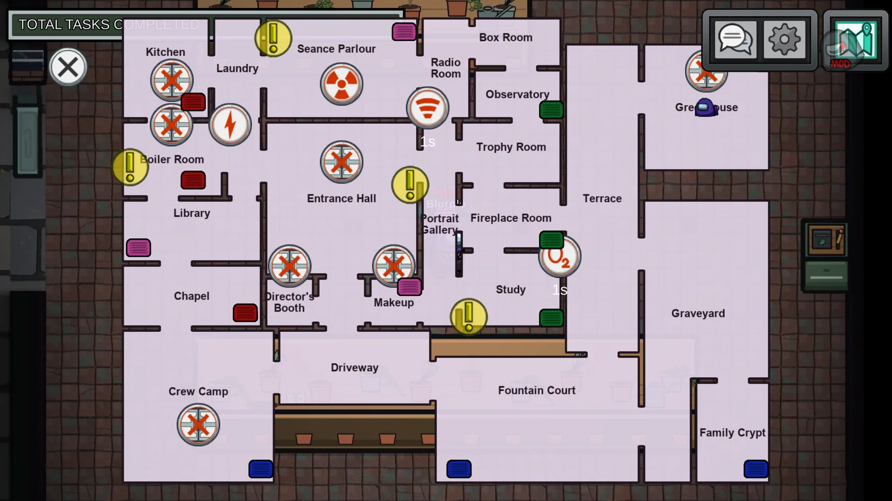
Sabotage-Karte (groß): alle Räume beschriftet, Sabotage- und Türknöpfe an ihren Räumen.
Vorspann
7 Sekunden, handgezeichnet mit zitternden Linien, läuft vor dem Rollen-Intro. Der Host wählt in „Hollowmere Intro“: erste Runde in der Lobby (Standard), jede Runde oder aus. Alle sehen ihn gleich lang, die Runde startet für alle gleich.
Vier Rauswürfe und zwei Skip-Szenen. Jeder Client wählt dieselbe Szene, ohne eigenen Netzverkehr. Die Void-Szene von Unknown's Collection hat Vorrang.
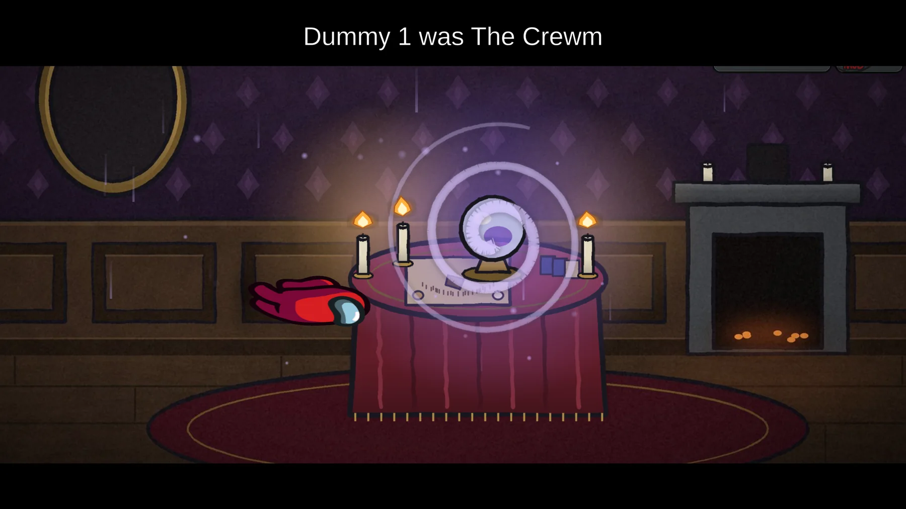
Im Spiel: „Die Kristallkugel“.
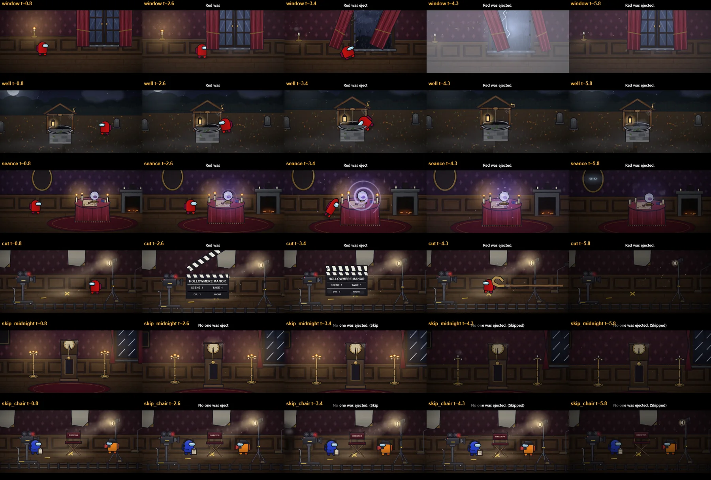
Alle Szenen: Aus dem Fenster, Der alte Brunnen, Die Kristallkugel, CUT!, Mitternacht (Skip), Leerer Stuhl (Skip).
Knopf, Symbol und Task-Blöcke
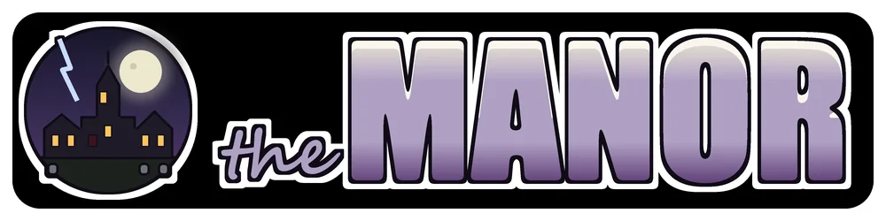
Freeplay-Knopf im Stil von Museum, Forest und Carnival.
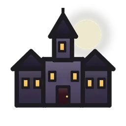
Lobby-Symbol im Kartenwähler.
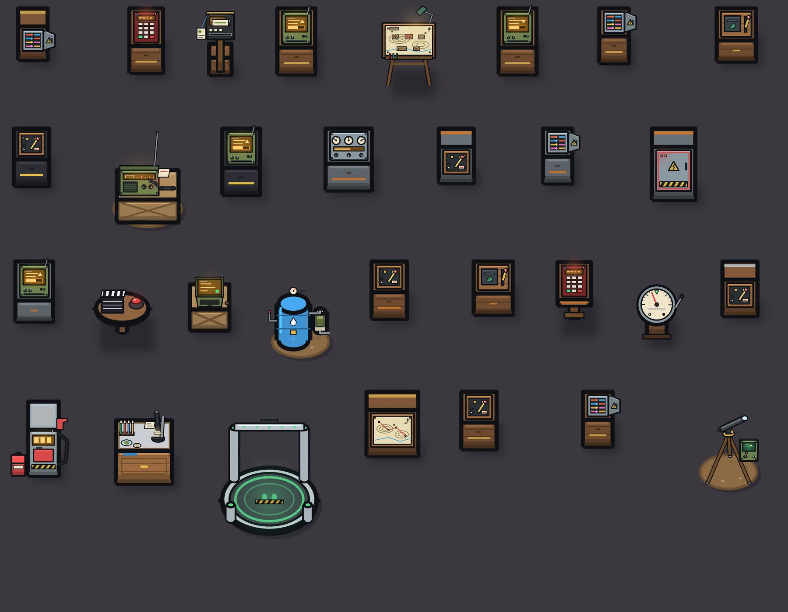
Task-Blöcke (Auswahl) auf dem Wald-Baukasten in Villa-Farben, mit Regieklappe, Funkgerät, Teleskop und Monitorpult.
Die Idee
Filmset erklärt die Technik
Atlas-Karten laufen auf der Skeld-Mechanik, also braucht jede Karte Reaktor, Sauerstoff, Strom, Kameras und Admin. In einer alten Villa wirkt das fremd. Die Filmcrew löst das: Die Kameras sind ihre Drehkameras, die Monitore stehen in der Regie, zwei Stromaggregate versorgen die Scheinwerfer, und gefunkt wird mit Walkie-Talkies.
Der Notfallknopf ist die Filmklappe in der Halle. Wer ein Meeting ruft, schlägt sie zu: »Cut!«
Der Spuk liefert das Spiel
Was die Crew nicht kontrolliert, ist das Haus. Kerzen, Geheimgänge und die Standuhr gehören der Villa. Sie machen die Karte spielerisch eigen, so wie Überwachung das Museum, Wetter den Forest und die Fahrgeschäfte den Park prägen.
Optik: Horrorfilm-Set mit Absperrband, Kamerawagen auf Schienen, Kunstblut in der Maske und Kreidemarkierungen am Boden. Dazwischen echte verfallene Pracht mit Staub, Spinnweben und Porträts.
Klein und Groß
Klein: Die Crew hat sich im Haus verbarrikadiert, die Haustür ist zu und draußen tobt der Sturm. Alle 14 Systeme liegen im Haus, einige Räume teilen sich Aufgaben.
Groß: Die Haustür ist offen. Garten, Crew-Lager, Gewächshaus, Friedhof und Gruft kommen dazu. Lager, Shields und ein Motor ziehen nach draußen. Der Host wählt die Variante in den Atlas-Einstellungen.
Drei Mechaniken
Erste Fassung der Regeln. Zahlen sind Startwerte für den Playtest, alles soll später per Host-Option einstellbar sein.
Kerzen & Dunkelheit
Dunkle Räume (im Plan blau getönt) halbieren die Sicht.
Leuchter lassen sich per Knopf anzünden und brennen 60 s. Solange sie brennen, gilt im Umkreis normale Sicht.
Bei der Licht-Sabotage gehen alle Scheinwerfer aus. Brennende Kerzen bleiben, und sie werden dann zur einzigen Lichtquelle.
Impostor können Kerzen ausblasen, mit Abklingzeit.
OffenAusblasen für Impostor: ja oder nein? Sicht in dunklen Räumen 50 % oder weniger?
Geheimgänge
Wandteppich im Séance-Salon führt in die Halle, nur in diese Richtung.
Speiseaufzug in der Küche führt in den Heizungskeller, nur nach unten.
Drehbücherregal zwischen Bibliothek und Halle, in beide Richtungen, hörbar und sichtbar.
Groß: Gruft-Tunnel unter dem Garten von der Gruft in die Hauskapelle (Einbahn).
Für alle Spieler nutzbar. Das ist eine Alternative zu Vents, die auch Crewmates hilft.
OffenKurze Abklingzeit pro Spieler, damit niemand im Kreis flieht?
Mitternachtsuhr
Die Standuhr in der Halle schlägt alle 90 s, mit einer Vorwarnung 5 s vorher.
Beim Schlag flackert das Licht 3 s lang, und alle Türen schlagen für 4 s zu.
Die Porträts im Flur Ost drehen sich und blicken in die Richtung der zuletzt gefundenen Leiche. Das ist ein kleiner Hinweis für die Crew.
Vorhersehbar: Beide Teams können ihre Züge auf den Schlag legen.
OffenPorträt-Hinweis behalten oder ist er zu stark? Uhr während Sabotagen pausieren?
Räume und Skeld-Systeme
Jedes Skeld-System braucht einen Raum, damit Tasks, Sabotagen, Admin und Kameras ohne eigenen Netzcode funktionieren. In der großen Variante ziehen drei Systeme nach draußen.
Sabotagen
Skeld
In der Villa
Reparatur
Reactor
Das Ritual eskaliert: Der Séance-Tisch hebt ab, und Geisterstimmen werden lauter.
Zwei Spieler legen gleichzeitig die Hände auf die beiden Tischenden im Séance-Salon.
O2
Der Kamin zieht nicht mehr, und Rauch füllt das Haus.
Zwei Ventile: Kaminklappe im Kaminzimmer und Lüftung im Arbeitszimmer.
Lights
Die Scheinwerfer der Crew fallen aus, nur Kerzen brennen weiter.
Sicherungskasten im Heizungskeller.
Comms
Funkstille, aus den Walkie-Talkies kommt nur Flüstern.
Frequenz im Funkraum einstellen.
Doors
Türen fallen zu wie in jedem Spukhaus.
13 Türen, 7 senkrecht und 6 waagerecht, wie auf der Skeld.
So geht es weiter
Entwurf abgenommen. Umsetzung läuft seit dem 09.10.
Externe Karten in Atlas: gebaut (lokal). Öffentliche Schnittstelle AtlasMaps.Register: Grafik aus der eigenen DLL, Knöpfe in Freeplay und Lobby, Kartenwahl per Schlüssel, Start-Sperre im Handshake, wenn jemand die Karte nicht hat. Atlas erwähnt die Villa nirgends.
Karte fertig gezeichnet und im Spiel getestet. Beide Größen aus einem Generator, je 7 + 6 Türen in den Skeld-Gruppen, 46 Konsolen, Host-Option „Hollowmere Manor Size“. Gemessen: Klein 9,7 s, Groß 18,8 s weitester Weg. Stilblatt, Objekte und Vote-Szenen von Fable, Kartenboden, Task-Blöcke, Knopf und Vorspann nach Fables Limit fertiggestellt.
Vorspann und Vote-Szenen laufen im Spiel (Abschnitte oben). Offen: echter Mehrspieler-Test (Host-Entscheidung, Start-Sperre, gleicher Rundenstart).
Mechaniken einzeln. Erst Kerzen, dann Uhr, dann Geheimgänge, jeweils mit Autotest.
Kein Release vor Halloween und nur auf deine Ansage, genau wie bei den Kostümen.
Offene Fragen
Name: Hollowmere Manor als Arbeitstitel, oder hast du einen eigenen?
Soll die kleine Variante als Standard eingestellt sein?
Sollen die Halloween-Kostüme (Freddy, Jason, Xenomorph, Ghostface) als Filmplakate oder Requisiten in der Villa auftauchen?
Rauswurf-Szenen: aus dem Fenster in den Sturm, in den Brunnen, vor die Filmkamera?